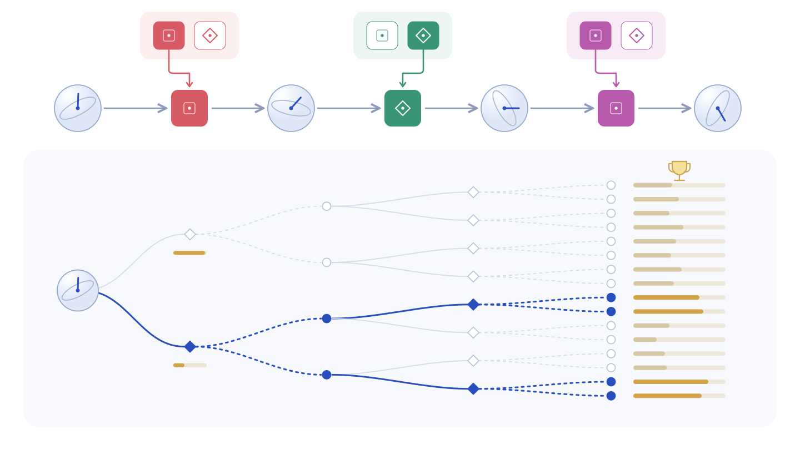
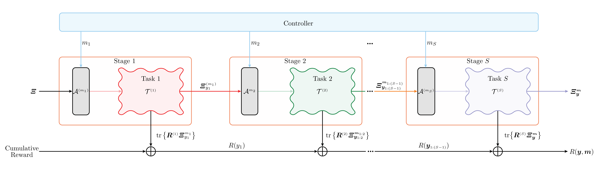
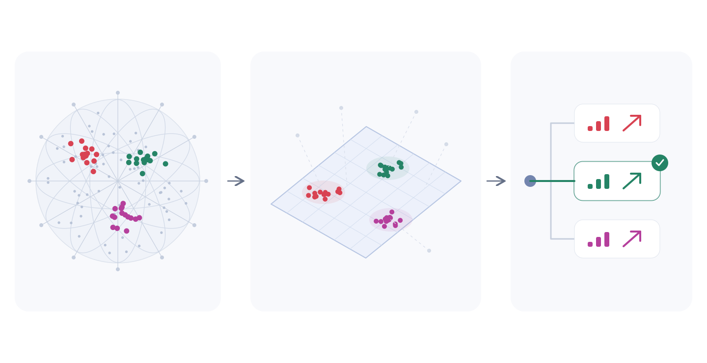
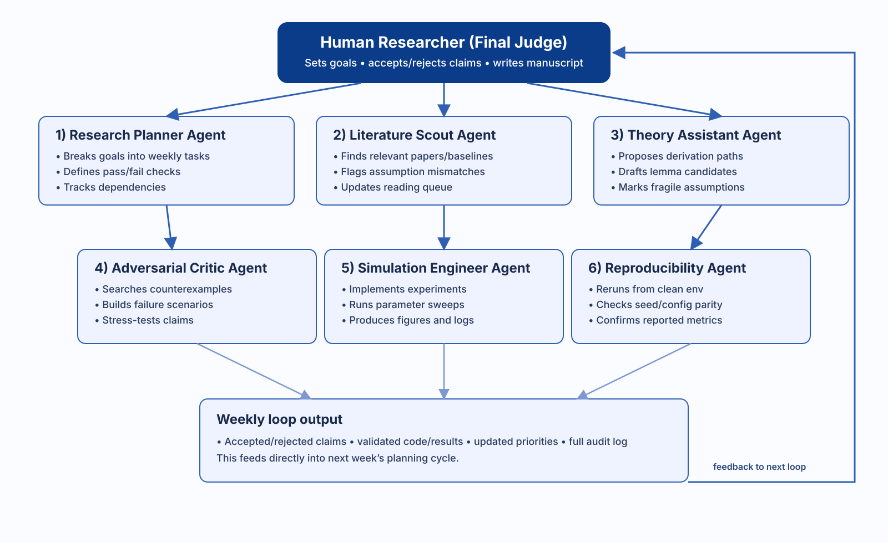

Problem statement
In practical applications utilizing quantum systems, the same system at hand may need to be reused for several tasks. However, reinitializing the quantum state can be costly, to the point where a discrete set of control operations is preferable. Because each quantum operation, including measurement, can change the state and yield probabilistic outcomes, an action that maximizes the utility of the quantum state for one task may reduce its utility for later tasks, and the controller may need to plan the actions for each possible outcome. This motivates the research that will be followed in the 16.S897 course, which will be referred to as the quantum chameleon problem: how should a controller decide on its actions to maximize performance across a sequence of tasks with less computational complexity?

Why this matters, and why it is hard
Quantum sensors and processors need fast, reliable control as their tasks change. On the other hand, a preliminary investigation shows that the number of possible actions grows doubly exponentially with the number of tasks, demonstrating that deciding actions through brute-force search is computationally challenging. Therefore, the investigation should be extended to include decision-making policies providing theoretical guarantees on their proximity to the optimal policies that decide on the optimal sequence of actions.
The Quantum Chameleon Problem
A Chameleon adapts to the color of the environment to increase its chance of survival. This is similar to the quantum system in our problem setting, where the system must be transformed to fit the specifics of the tasks it is intended to perform.
The problem setting of Quantum Chameleon Problem
At each stage, the controller decides an action to perform on the quantum state to prepare it for future tasks. Actions performed by the controller, as well as the task that the state has been through, induce a change on the quantum state in a probabilistic manner. Rewards quantify how well the quantum state adapts to a specific task, and the aim is to maximize the cumulative reward across all tasks.

Core research question
The manuscript developed throughout the semester will include the mathematical formulation of the problem and decision-making policies in the context of quantum systems, as well as the development of approximately optimal policies. In order to develop such policies, the following question needs to be answered: What is the quantity that captures the effective dimensionality of the problem such that it suffices for the controller to decide on the actions by searching over this effective dimension to achieve an approximately optimal policy? Formulation and characterization of this quantity will pave the way for quantifying the fundamental bounds on the computational complexity of approximately-optimal policies, as well as development of such policies.

What I expect the agent to do.
- Consistency checks for the mathematical claims
- Derivation and formalization of proofs
- Finding relevant examples and testing the results via numerical simulations
- Producing high-quality image that conforms to the house-style standards of the research group
